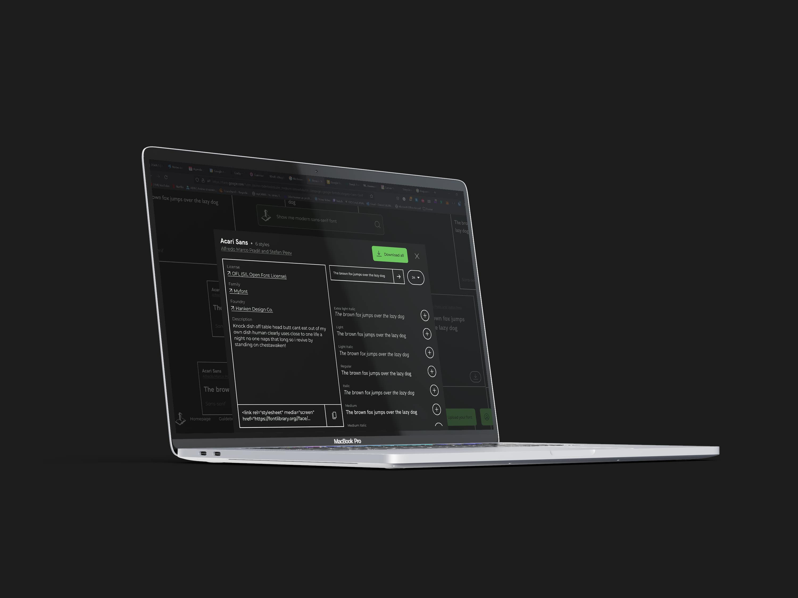
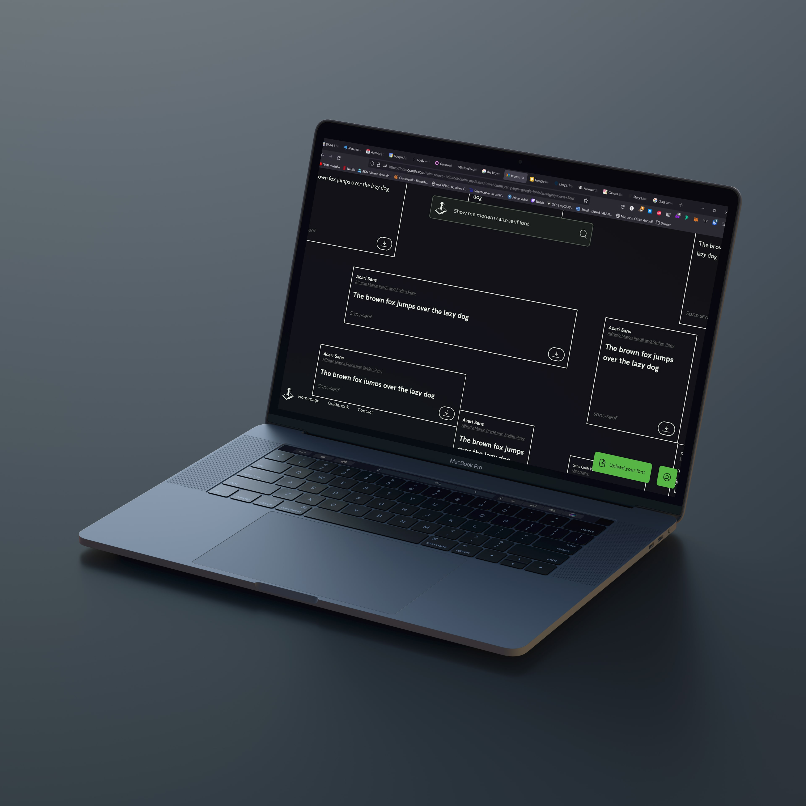

Font Library
We were asked to redesign the "Font Library" website.
This typographic website is a community website
based on open source principles.
Our redesign had to keep these aspects while offering a richer
navigation and more current graphic codes. I decided to propose a huge canvas in order to move around the
site and explore the available fonts.
The possibility of a search based on phrases rather than
keywords would also bring a more human and natural side to the search.


